Swipe or press right to start the presentation - Pinch out or press ESC to see all the slides
Swipe or press down to see additional slides when available (see navigation arrows on the right)
Press F to set fullscreen - Press Alt and click to zoom in or out - Press B to fade to black - Press S for speaker view
Slides made using Slidify with Reveal.js framework
Menu
I - Carbon Peapods - A model 1D System
II - Kerogens - A Disordered Natural System
III - Effects of the Low-Dimensionality and Constraints on the Physical Properties of Carbon Materials
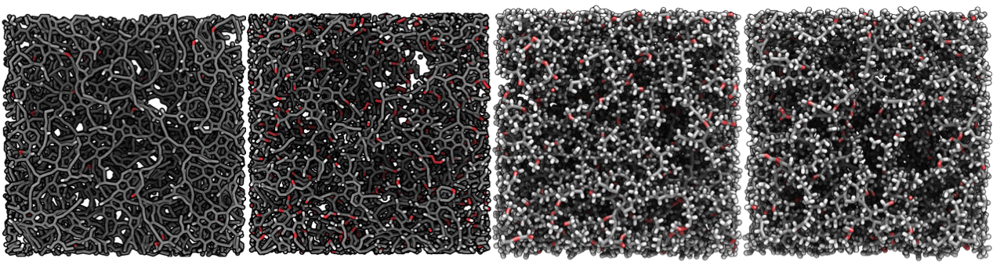


Chapter I
Carbon Peapods - A model 1D System
Institut Laue Langevin (Grenoble) and Laboratoire de Physique des Solides (Orsay)
Carbon nano-peapods: a model 1D system

Monomers:
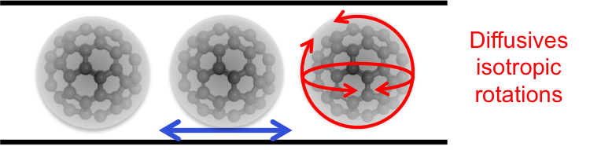
Polymers:


Carbon nano-peapods: a model 1D system

Carbon nano-peapods: a model 1D system
Mid T: Finite size 1D crystal
- Elastic diffusion $\rightarrow$ 1D crystal
- Quasi-elastic diffusion in Mono and Polymers $\rightarrow$ measure speed of sound along C$_{60}$ chains (3.5 km/s)
Bousige et al., PRB 87 (2013) 195438
Elastic nature:
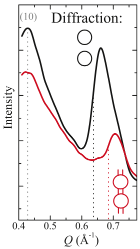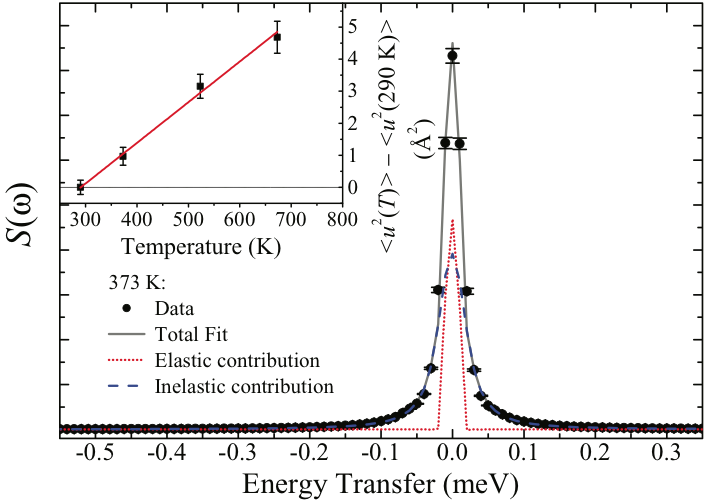


Carbon nano-peapods: a model 1D system

High T: Progressive fusion
- First observation of the fusion of a Takahasi-Gürsey chain
- No elastic diffusion $\Leftrightarrow$ Positionnal and orientationnal disorders
Bousige et al., PRB 87 (2013) 195438
Bousige et al., PRB 86 (2012) 045446
Inelastic nature:
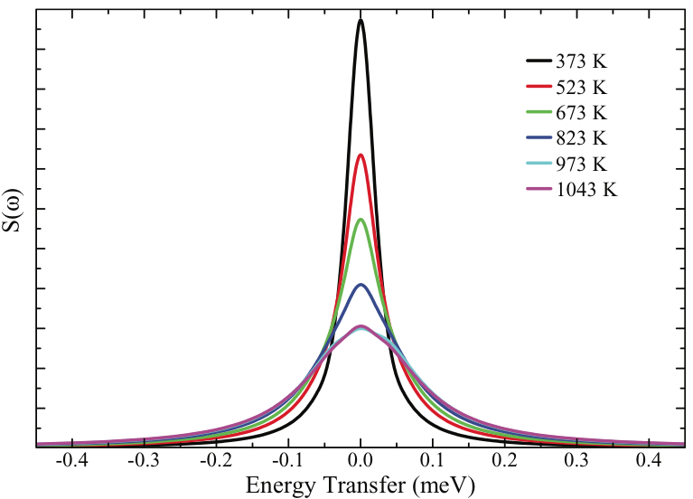
Carbon nano-peapods: a model 1D system

Low T: Orientational ordering
- Progressive strong contraction
- Isotropic rotations $\Rightarrow$ librations
- Evidence of strong rotation-translation coupling
- Evidence of C$_{60}$-tube friction in both mono- and polymers $\Leftrightarrow$ not linked to this ordering
Elastic nature:

Carbon nano-peapods: a model 1D system
- A very rich "phase diagram" in this 1D system, with phenomena never seen before in 1D systems
- Thanks to the thermal stability of peapods
- Thanks to the 2D orientation of the samples and their "neutron" quality
- At low temperatures, insights into the host-tube friction
- Links with nanofluidics and transport at the nanoscale in general
Chapter II
Kerogens - A Disordered Natural System
Massachusetts Institute of Technology (Cambridge, USA)
Apply the physicist's tools to an industrial problem
Gas shales are mainly composed of minerals and, in minority, of a multi-scale, amorphous porous organic matrix: kerogen.
Problem: the observed permeabilities are of the order of 10-100 nano-Darcy.
\(\Rightarrow\) We need to develop tools to tend towards a global description of shale beds.
Apply the physicist's tools to an industrial problem
Measure pair distributions functions of samples with various maturities, and reconstruct atomic structures using Hybrid Reverse Monte Carlo1,2 :
About the Hybrid Reverse Monte Carlo procedure
- No long range order
- Representative sample?
- No uniqueness of the solution
About the Hybrid Reverse Monte Carlo procedure
Reconstruction using Hybrid Reverse Monte Carlo method: $P^{acc}_{i\to j}(carbon)=min\left[1,exp\left(-\frac{1}{T_\chi}\left(\Delta\chi^2+\frac{\Delta U}{N}\frac{1}{\tilde{\omega}}\right)\right)\right]$ with:
$\chi^2=\sum_i\frac{\left(G_{sim}(r_i)-G_{exp}(r_i)\right)^2}{\sigma_{exp}(r_i)^2}$
$\tilde{\omega}=\frac{\omega}{N}=\frac{N}{N_{carbon}}\times\left|E_{carbon}\right| \qquad \omega T_\chi=Nk_BT$
We recently optimized the method by combining it with MD relaxation steps
Bousige et al., J. Chem. Phys. 142 (2015)
About the Hybrid Reverse Monte Carlo procedure
- $G(r)$ is a pair correlation function
- Information only on 2-body interactions
- REBO, AIREBO, REAXFF... only 3 or 4 body interactions
$\Rightarrow$ No uniqueness of the solution if more than 2-body interactions in the actual sample
$\Rightarrow$ We need additional experimental constraints on the models: adsorption, density of states, bulk modulus, etc...
Apply the physicist's tools to an industrial problem
Vibrational densities of states
Pore size distributions
Apply the physicist's tools to an industrial problem
Using the models for predictions:
Nature of the process:
Apply the physicist's tools to an industrial problem
Using the models for predictions:
\[C_v(T)=\left(\frac{\partial U}{\partial T}\right)_V=\frac{1}{k_BT^2} \int_{0}^{\infty}d\omega~G(\omega)\left(\hbar\omega\right)^2\times \frac{e^{\hbar\omega/k_BT}}{\left(e^{\hbar\omega/k_BT}-1\right)^2}\]
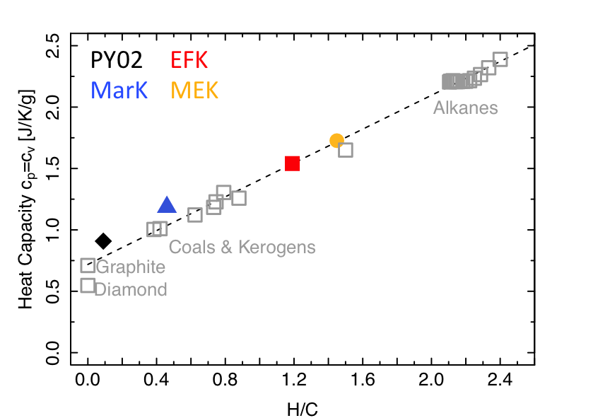
Linear correlation between H/C ratio (strongly linked to the maturity) and heat capacity \(c_p\)
Apply the physicist's tools to an industrial problem
Using the models for predictions:
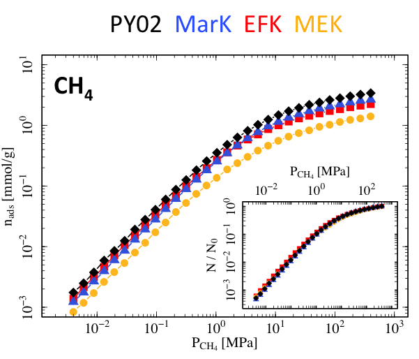
Even in the case of "high" O content (MarK), poor adsorption of water compared to CH$_4$
Better adsorption of CO$_2$ than CH$_4$
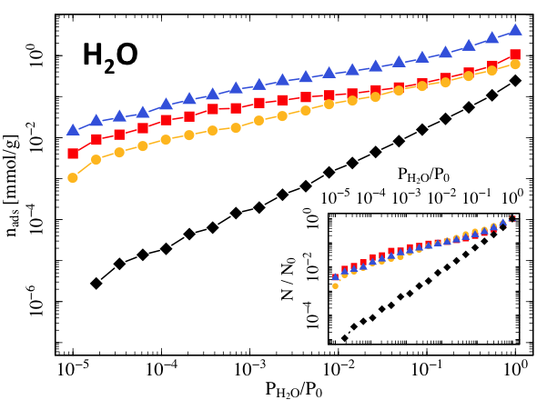 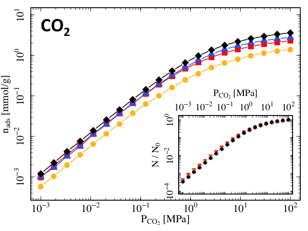
Apply the physicist's tools to an industrial problem
Using the models for predictions:
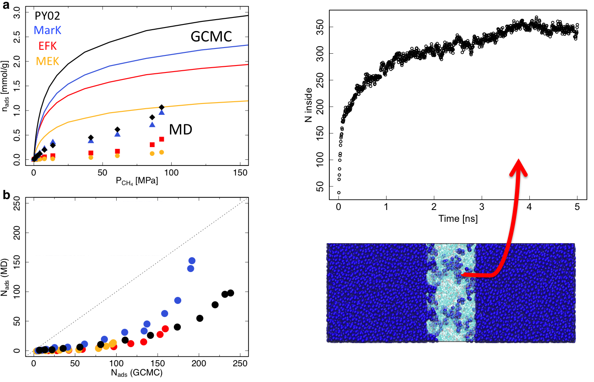
Apply the physicist's tools to an industrial problem
Using the models for predictions:
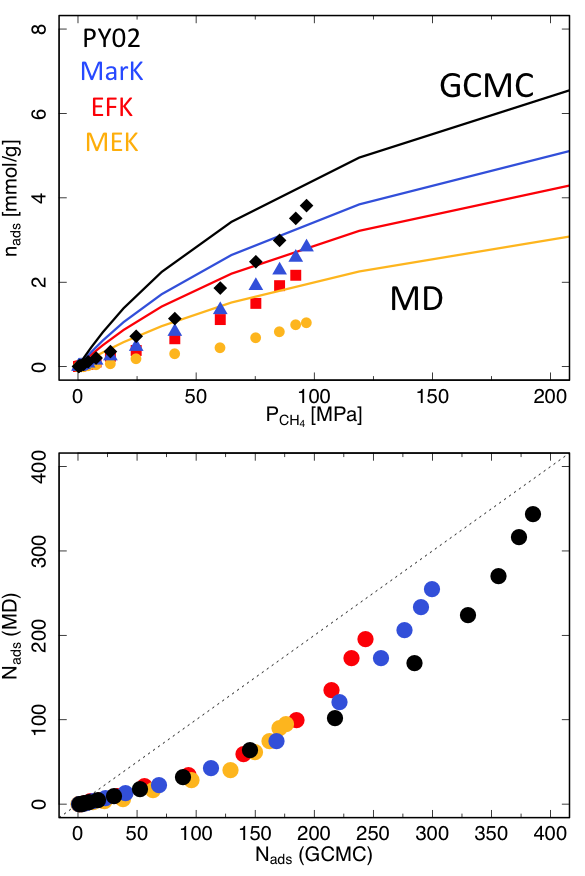
- He "goes everywhere", non regarding of the connectivity.
- Porosity measurements with He will yield much higher porosities compared to the ones probed with CH\(_4\)
- The industrials always assess porosities using He as a probe:
\(\Rightarrow\) Large overestimation of the resource available in the microporosity
Kerogens - Conclusions
- Realistic molecular models of mature and immature kerogens have been obtained (3 kerogens, 1 pyrobitumen)
- Validation in terms of VDOS and PSD
- Closure scheme: Elastic properties + Compositions $\Leftrightarrow$ Density
- DOS (or IR) and mechanical testing provide means to assess the density, heterochemistry, and maturity in kerogen
- Because of the closed porosity, adsorption provides biased/incomplete characterization of the porosity
- Water poorly adsorbs in the microporosity
Immature $\Leftrightarrow$ sp$^3$ $\Leftrightarrow$ Plastic
Heat capacity $c_p$ decreases with maturity
$\Rightarrow$ Maybe not as much resource as expected in kerogen’s microporosity...
Chapter III
Effects of the Low-Dimensionality and Constraints on the Physical Properties of Carbon Materials
Institut Lumière Matière (Villeurbanne)
Part I: 2D materials
Exploring strain transfer in supported graphene
Context of strain-tronics with graphene:
Optical and electronic properties can be tuned by the application of strain
\(\Rightarrow\) Applications in electronics, sensors, etc.
In the aim of using graphene (or TMDs) in such devices, one need a reproducible strain production.
Graphene is most of the time deposited on a substrate.

How efficiently is strain transferred?
What are the limits of strain transfer?
Exploring strain transfer in supported graphene
Experimental approach
Evolution of the Raman G-band
Biaxial strain in a Diamond Anvil Cell
Various substrates (Diamond, Sapphire, SiO\(_2\))
- Highly sensitive to in-plane strain
- Compression due to volume reduction of the substrate
- Maximization of the conformation of graphene to its substrate by the application of high pressures in a DAC with alcohol pressure transmitting medium (PTM)
- Various bulk moduli
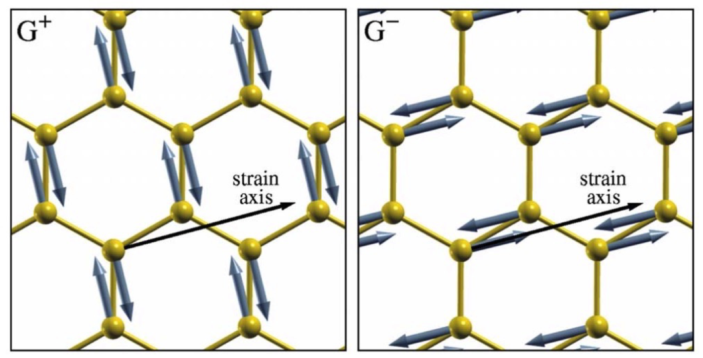

Exploring strain transfer in supported graphene
Results
| \(\partial\omega_G/\partial P\) | \(\beta_L\) | |
|---|---|---|
| (cm\(^{-1}\)/GPa) | (GPa) | |
| Diamond | $ 4.0\pm0.2$ | \(1329\) |
| Graphite | $ 4.4\pm0.3$ | \(1250\) |
| Sapphire | $ 7.8\pm0.5$ | $ 750$ |
| Copper | $ 9.2\pm0.3$ | $ 420$ |
| SiO\(_2\) | \(10.5\pm0.2\) | $ 114$ |
How do we explain that ?
$\Rightarrow$ Pressure is not the good variable
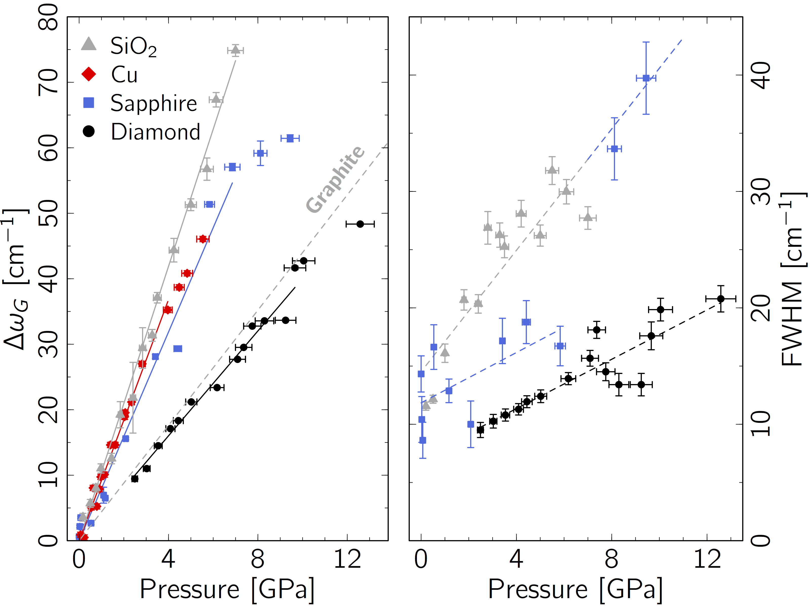
Exploring strain transfer in supported graphene
After renormalization to the relevant physical quantities \(\varepsilon\) and \(\sigma\)
$\varepsilon_G-\varepsilon_S\neq$0
$\Leftrightarrow$
Imperfect strain transmission
$\varepsilon_G-\varepsilon_S=$0
$\Leftrightarrow$
Perfect strain transmission
Renormalization to the relevant physical quantities \(\varepsilon\) and \(\sigma\)
- For 2D materials, Pressure of the PTM and Stress of the material are not equivalent
- Graphite is a 3D material, so $P\Leftrightarrow\sigma$
- For a Raman shift of the deposited graphene corresponds a stress of the graphene flake:$$\sigma_G^S=\Delta\omega_G^S/\Omega_{gr}$$
- The strain ε of the graphene flake and the strain of the substrate can be retrieved through the Birch-Murnaghan equation of states: $$\frac{r}{r_0}=\left(1+\sigma\frac{\beta'}{\beta}\right)^{-1/\beta'}$$

Exploring strain transfer in supported graphene
Developing a tool to check for strain transfer efficiency
- Ding Nano Lett. 10 (2010): Piezo-actuators, sandwiched graphene
- Shin J. Appl. Phys. (2016): Glass blower method (suspended graphene)
Where does the energy go?
Defects/tearing- Buckling/slipping
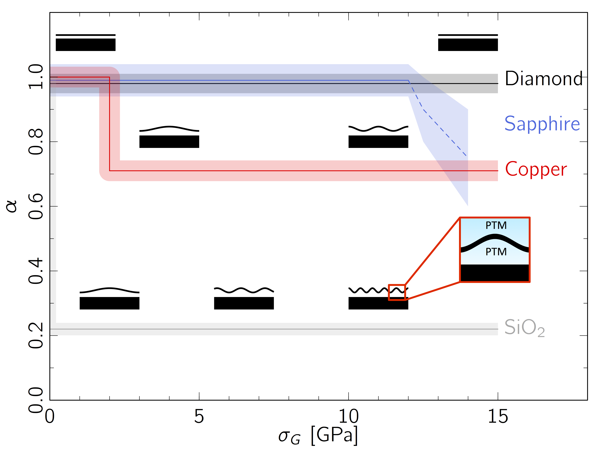 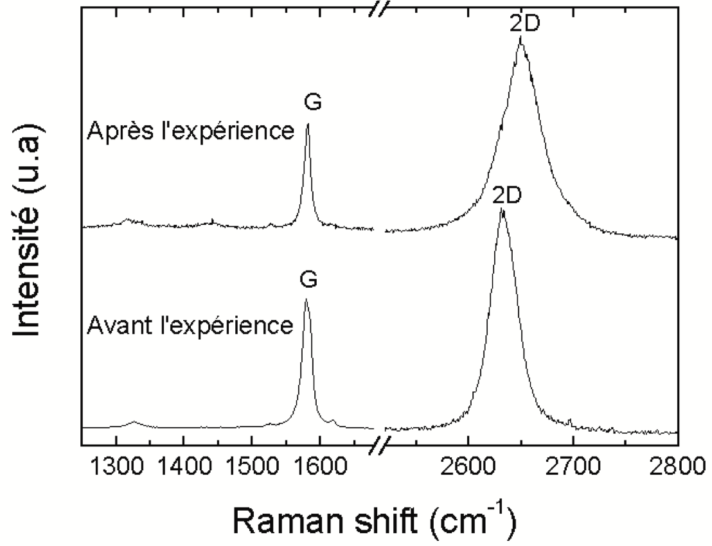
Supported Graphene - Conclusions
- Total strain transfer should never be assumed, but carefully checked
- How to check this? Easy tool:
- Perfect strain transmission: $\frac{\partial\Delta\omega_G}{\partial\varepsilon} = -57\pm2\text{cm}^{-1}/\%$
- Imperfect strain transmission:$\frac{\partial\Delta\omega_G}{\partial\varepsilon} > -57\pm2\text{cm}^{-1}/\%$
- Still need to explore:
- The possible correlation between $\sigma_G^c$ and the percolation of the locally buckled regions
- The role of the topology of the buckled regions
- Its development mechanism
- Its relation with the substrate roughness and the graphene microstructure
Work in progress: suspended objects
Goals:
- Studying various individual nano-objects at high pressure with Raman or SMS spectroscopies, e.g:
- sp\(^2\)-sp\(^3\) transition in bi-layer graphene at high pressures ($\gtrsim$10 GPa)
- optical absorption of individual nanotube under pressure (SMS)
- you name it...

Transferring the substrate
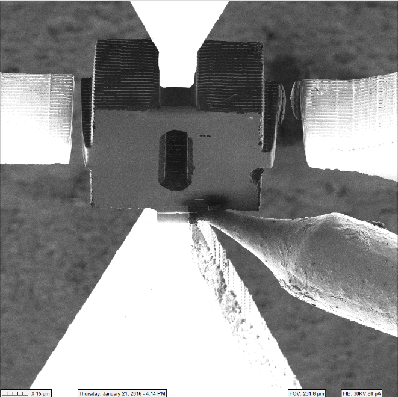
Spatial Modulation Spectroscopy (SMS)

Part II: 1D materials
Towards new carbon nanotube-based materials
Goals
Taking advantage of the $sp^2-sp^3$ transition around $\sim$10 GPa and the $1/D^3$ evolution of the radial collapse pressure to:
- Tune the electrical and mechanical properties of tubes with large diameters
- Produce $sp^3$ tubular 3D arrangements
On the feasability of the tubular \(sp^3\) 3D structures

First results:
Obtaining single-chirality SWNT samples
Aqueous Two-Phase Separation
Separation of carbon nanotubes in two immiscible aqueous phases based on polymers : polyethylene glycol (PEG) and dextran.
\(\Rightarrow\) Spontaneous repartition according to nanotube's diameter and metallicity, and affinity with the surfactants.
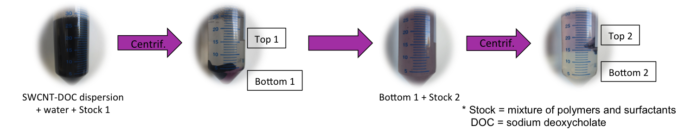
We obtain solutions of NT highly enriched in (6,5) chirality (diameter 0.75 nm).
[1] Khripin et al., J. Am. Chem. Soc. (2013)
[2] Subbaiyan et al., ACS Nano (2014)
First results:
Obtaining single-chirality SWNT samples
Once single chirality NT solutions are obtained, the tubes ares re-bundled by heat treatment.
Next steps:
- High pressure-high temperature treatment \(\Rightarrow\) \(sp^2-sp^3\) transition? (tomorrow)
- Adsorption of gases and water (july)
- High pressure of water-filled tubes
- Dynamics of water and other adsorbed molecules
Conclusions
- Similar problematics :
- Carbon compounds
- Study of the structure
- Study of the dynamics
- Trying to draw a link between local and macroscopic behaviors
- Similar techniques:
- Diffraction (x-rays, neutrons)
- Inelastic Neutrons Scattering
- Raman spectroscopy
- Monte Carlo and Molecular Dynamics Simulations
- Playing on pressure, temperature...
Thanks!
ILL and LPS
Pascale Launois
Stéphane Rols
Julien Cambedouzou
MIT
Benoît Coasne
Roland Pellenq
ILM
Alfonso san Miguel
Denis Machon